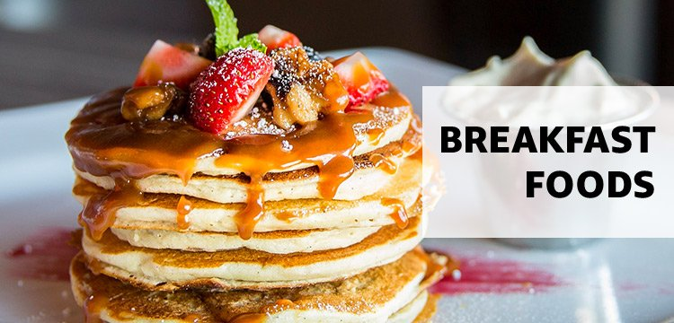

A Simple Formula Can Ensure Your Breakfast Keeps You Full Until Lunch Every Day
Put down the cereal spoon.
Real talk—there is nothing worse than eating what you think is a filling, healthy breakfast at 8 a.m. ...only to be freaking STARVING two hours later. What gives?! A lot of this has to do with what we traditionally eat at breakfast: starch, starch, and more starch. (Just think of the most common breakfast foods—pancakes, bagels, waffles, toast...) “This can be good for energy levels, but it doesn’t last unless we have other elements for satiety,” says Cara Harbstreet, R.D., of Street Smart Nutrition. (Which is probs why that 10 a.m. hanger is so common.) As tempting as it is to just eat a bagel with cream cheese and call it a day, aim for a balanced meal that includes lean protein, healthy fats, and fiber-rich carbs, says Kristina LaRue, R.D. That way, you'll stay full and satisfied long after you're done eating. When choosing your protein (you should aim for about 20 grams of it at breakfast), stick with eggs, Greek yogurt, and lean breakfast meats, says LaRue. Then, combine your lean protein with whole grains (oatmeal, whole-grain bread, or quinoa), and fruits and vegetables. All three provide fiber and complex carbohydrates that help you feel full longer. And don’t shun fats like nut butters, avocado, and olive oil. Your body needs fat to absorb vitamins in your food, and they contribute to the “fullness factor," says LaRue. (A.k.a. they'll help you feel satisfied for longer.) TL;DR: Lean protein + fiber-rich carbs + healthy fats = filling breakfast
If you need inspiration, here are some healthy breakfast options that make the grade:
- Overnight oats: Try LaRue's chocolate banana overnight oats, which satisfies your sweet tooth while providing a good dose of protein, thanks to the addition of cottage cheese and fiber.
- Hearty toasts: LaRue loves making savory breakfast toast. Toast a slice of whole-grain bread and spread it with ricotta cheese, burrata, or feta cheese. Then top with veggies like tomatoes, avocado, or arugula. Add an egg, seeds, or nuts and you have a balanced meal.
- Baked oatmeal: Harbstreet’s go-to recipe combines oats with milk, dried or chopped fruit and some egg to bind it all together. “I’ll bake them in muffin tins so they can be a grab-and-go option, or reheated in a bowl,” she says. “I pair them with a container of yogurt and handful of raw or roasted nuts.”
- Veggie hash: If you have leftover veggies in the fridge, transform them into a hearty breakfast in under 10 minutes. Add them to two scrambled eggs and top with a small amount of cheese, says Harbstreet.
One thing you're probably okay skipping? Cereal. Many popular varieties have surprisingly high amounts of sugar per serving, setting you up for a crash later in the day. And eating cereal "without much fiber, without a lot of protein, without any fat" might mean "you’re eating again an hour later," Leslie Bonci, R.D. and founder of Active Eating Advice, previously told WomensHealthMag.com. And don’t be afraid to think outside of the traditional breakfast box, says Harbstreet. “In some cases, dinner leftovers from the night before can be one of the best choices to save time, cleanup, and effort in the early morning hours," she says. So, yeah, pizza for breakfast isn't actually a terrible idea. The bottom line: You can't go wrong with lean protein, healthy fats, and fiber-rich, complex carbs in your breakfast. Watch Next